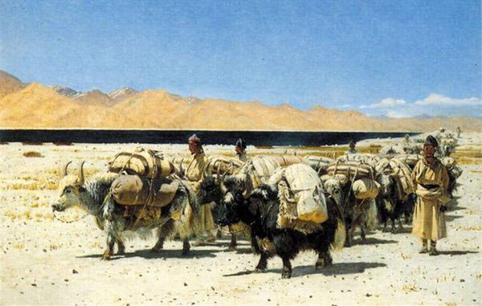

Фауна Поэдрума
Из-за строго южного расположения острова фауна представлена довольно специфично. Лесной север кишит яркими птицами и насекомыми, каменистая середина — скудна и неприметна, а песчаный юг, напротив, оживает у побережья. Здесь же, помимо привычных для Мериона животных, обитают существа, которых не встретишь больше нигде.

Север: леса и горы
На севере, в лесной части, сосредоточена практически большая часть животных — встречаются гепарды, тигры, змеи, ящерицы, хамелеоны, ленивцы. В горах обитают горные барсы, овцы, яки, козлы и им подобные — для нас крайне привычные создания. В лесах полно москитов и комаров, однако их численность решительно сокращается в последнее время. В общем, да — леса полны разными видами насекомых.
Птиц тоже довольно много, и практически все иноземные путники отмечают их яркие, запоминающиеся цвета. В основном, действительно, живность на севере довольно колоритна — чего нельзя сказать о каменистой пустыне в средней части острова.
Центр: каменистая пустыня
В средней части острова, среди каменистых пустынь, водятся в основном насекомые и маленькие животные, которые живут преимущественно в земле. Фауна здесь скудна и неприметна — ей приходится выживать там, где мало воды и почти нет укрытий.
Юг: пески и побережье
В южной части, наполненной песком, фауна не сильно отличается от центральной, однако ближе к побережью, где довольно много зелени, всё же разбавляется разными змеями, крупными ящерицами и тысячами насекомых.
Уникальные животные
Помимо описанных выше привычных видов, на Поэдруме обитают существа, которых не встретишь больше нигде: флавны, горные яки, улдуры, пнорхи, хужи и рухи. Подробное описание каждого из них — на отдельной странице.
География Мериона · Поэдрум · Фауна